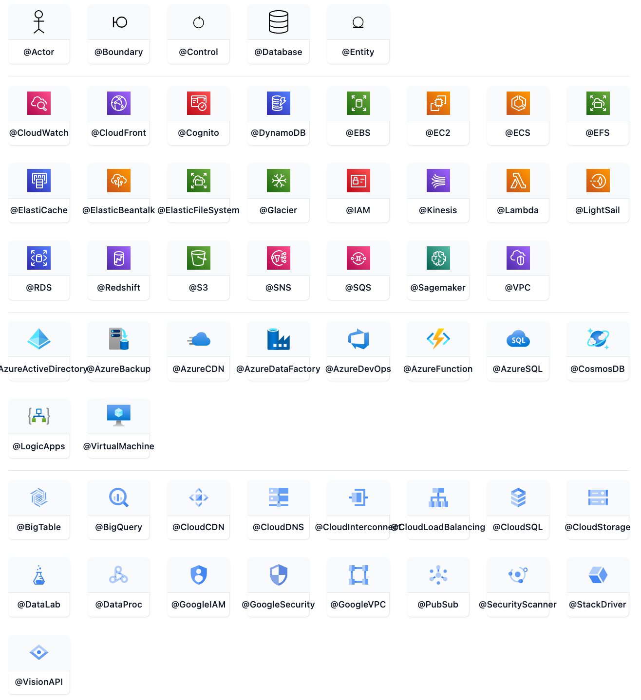

ZenUML
A Sequence diagram is an interaction diagram that shows how processes operate with one another and in what order.
Mermaid can render sequence diagrams with ZenUML. Note that ZenUML uses a different syntax than the original Sequence Diagram in mermaid.
zenuml
title Demo
Alice->John: Hello John, how are you?
John->Alice: Great!
Alice->John: See you later!
Syntax
Participants
The participants can be defined implicitly as in the first example on this page. The participants or actors are rendered in order of appearance in the diagram source text. Sometimes you might want to show the participants in a different order than how they appear in the first message. It is possible to specify the actor's order of appearance by doing the following:
zenuml
title Declare participant (optional)
Bob
Alice
Alice->Bob: Hi Bob
Bob->Alice: Hi Alice
Annotators
If you specifically want to use symbols instead of just rectangles with text you can do so by using the annotator syntax to declare participants as per below.
zenuml
title Annotators
@Actor Alice
@Database Bob
Alice->Bob: Hi Bob
Bob->Alice: Hi Alice
Here are the available annotators: 
Aliases
The participants can have a convenient identifier and a descriptive label.
zenuml
title Aliases
A as Alice
J as John
A->J: Hello John, how are you?
J->A: Great!
Messages
Messages can be one of:
- Sync message
- Async message
- Creation message
- Reply message
Sync message
You can think of a sync (blocking) method in a programming language.
zenuml
title Sync message
A.SyncMessage
A.SyncMessage(with, parameters) {
B.nestedSyncMessage()
}
Async message
You can think of an async (non-blocking) method in a programming language. Fire an event and forget about it.
zenuml
title Async message
Alice->Bob: How are you?
Creation message
We use new keyword to create an object.
zenuml
new A1
new A2(with, parameters)
Reply message
There are three ways to express a reply message:
zenuml
// 1. assign a variable from a sync message.
a = A.SyncMessage()
// 1.1. optionally give the variable a type
SomeType a = A.SyncMessage()
// 2. use return keyword
A.SyncMessage() {
return result
}
// 3. use @return or @reply annotator on an async message
@return
A->B: result
The third way @return is rarely used, but it is useful when you want to return to one level up.
zenuml
title Reply message
Client->A.method() {
B.method() {
if(condition) {
return x1
// return early
@return
A->Client: x11
}
}
return x2
}
Nesting
Sync messages and Creation messages are naturally nestable with {}.
zenuml
A.method() {
B.nested_sync_method()
B->C: nested async message
}
Comments
It is possible to add comments to a sequence diagram with // comment syntax.
Comments will be rendered above the messages or fragments. Comments on other places
are ignored. Markdown is supported.
See the example below:
zenuml
// a comment on a participant will not be rendered
BookService
// a comment on a message.
// **Markdown** is supported.
BookService.getBook()
Loops
It is possible to express loops in a ZenUML diagram. This is done by any of the following notations:
- while
- for
- forEach, foreach
- loop
while(condition) {
...statements...
}
See the example below:
zenuml
Alice->John: Hello John, how are you?
while(true) {
John->Alice: Great!
}
Alt
It is possible to express alternative paths in a sequence diagram. This is done by the notation
if(condition1) {
...statements...
} else if(condition2) {
...statements...
} else {
...statements...
}
See the example below:
zenuml
Alice->Bob: Hello Bob, how are you?
if(is_sick) {
Bob->Alice: Not so good :(
} else {
Bob->Alice: Feeling fresh like a daisy
}
Opt
It is possible to render an opt fragment. This is done by the notation
opt {
...statements...
}
See the example below:
zenuml
Alice->Bob: Hello Bob, how are you?
Bob->Alice: Not so good :(
opt {
Bob->Alice: Thanks for asking
}
Parallel
It is possible to show actions that are happening in parallel.
This is done by the notation
par {
statement1
statement2
statement3
}
See the example below:
zenuml
par {
Alice->Bob: Hello guys!
Alice->John: Hello guys!
}
Try/Catch/Finally (Break)
It is possible to indicate a stop of the sequence within the flow (usually used to model exceptions).
This is done by the notation
try {
...statements...
} catch {
...statements...
} finally {
...statements...
}
See the example below:
zenuml
try {
Consumer->API: Book something
API->BookingService: Start booking process
} catch {
API->Consumer: show failure
} finally {
API->BookingService: rollback status
}
Integrating with your library/website.
Zenuml uses the experimental lazy loading & async rendering features which could change in the future.
You can use this method to add mermaid including the zenuml diagram to a web page:
<script type="module">
import mermaid from 'https://cdn.jsdelivr.net/npm/mermaid@10/dist/mermaid.esm.min.mjs';
import zenuml from 'https://cdn.jsdelivr.net/npm/@mermaid-js/mermaid-zenuml@0.1.0/dist/mermaid-zenuml.esm.min.mjs';
await mermaid.registerExternalDiagrams([zenuml]);
</script>